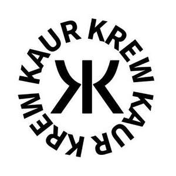

Trade Mark Journal No.2025/009 28 February 2025
UK00004162145 19 February 2025 (24,25)

- Class 24
- Hooded blankets; Hooded towels; Towels; Bath towels; Bath sheets (towels); Bathroom towels; Towels of textiles; Hand towels; Bath wrap towels; Towels of textile; Towels [textile]; Towels [of textile]; Face towels; Large bath towels; Face towels of textiles; Children's towels; Household linen, including face towels; Hand towels of textile; Textile face towels; Face towels of textile; Quilts of towel; Towel sheet; Textile hair drying towels; Turban towels for drying hair; Textile exercise towels; Bed linen and blankets; Towels [textile] for use in connection with toddlers; Towels [textile] for use in connection with babies; Bath sheets; Towels made of textile materials; Bed clothes and blankets; Face towels [made of textile materials]; Towelling coverlets; Woolen blankets; Cot blankets; Woollen blankets; Bed blankets; Blankets (Bed -); Cotton blankets; Quilted blankets [bedding]; Baby blankets; Silk blankets; Blankets with sleeves; Silk bed blankets; Receiving blankets; Travelling blankets; Children's blankets; Bed blankets made of cotton; Textile printers' blankets; Printers' blankets of textile; Bed blankets made of man-made fibres; Blankets for outdoor use; Blanket throws; Quilt bedding mats; Bed quilts; Ticks (mattress and pillow coverings); Covers for pillows; Duvets; Coverlets; Printing blankets of textile material; Covers for duvets; Textile covers for duvets; Bed clothes; Pillowcases [pillow slips]; Woven fabrics for cushions.
- Class 25
- Clothes; Clothing; Baby clothes; Nappy pants [clothing]; Denims [clothing]; Work clothes; Jackets [clothing]; Clothes for sports; Aprons [clothing]; Drawers [clothing]; Jackets (Stuff -) [clothing]; Clothes for sport; Linen clothing; Headbands [clothing]; Headbands for clothing; Gloves [clothing]; Gloves as clothing; Bottoms [clothing]; Furs [clothing]; Maternity clothing; Jerseys [clothing]; Layettes [clothing]; Clothing layettes; Woolen clothing; Hoods [clothing]; Clothing for leisure wear; Clothing for babies; Ready-to-wear clothing; Garments for protecting clothing; Bodies [clothing]; Tops [clothing]; Playsuits [clothing]; Knitwear [clothing]; Silk clothing; Fabric belts [clothing]; Mitts [clothing]; Hats (Paper -) [clothing]; Chaps (clothing); Ready-made clothing; Embroidered clothing; Casual clothing; Knitted clothing; Hoodies; Sweatshirts; Hooded sweatshirts; T-shirts; Hooded sweat shirts; Short-sleeved T-shirts; Turtleneck shirts; Hooded pullovers; Long-sleeved shirts; Beanies; Short-sleeve shirts; Camouflage shirts; Short-sleeved shirts; Tee-shirts; Fleece jackets; Corduroy shirts; Tracksuits; Sleeved jackets; V-neck sweaters; Collared shirts; Sweat shirts; Sleeveless jackets; Beanie hats; Sweaters; Sweatpants; Jackets; Fleece pullovers; Knit shirts; Men's and women's jackets, coats, trousers, vests; Mock turtleneck shirts; Cardigans; Turtleneck pullovers; Yoga shirts; Denim jackets; Balaclavas; Turtleneck sweaters; Camouflage jackets; Knit jackets; Jackets being sports clothing; Casual shirts; Turtlenecks; Dress shirts; Pullovers; Sleeveless pullovers; Parkas; Bandanas; Anoraks [parkas]; Fleece shorts; Sweat jackets; Quilted jackets [clothing]; Maternity shirts; Jumpers [sweaters]; Printed t-shirts; Hooded tops; Jumpers [pullovers]; Fleece vests; Polo shirts; Polar fleece jackets; Button-front aloha shirts; Trenchcoats; Gilets; Hooded bathrobes; Sleep shirts; Tracksuit tops; Scarves; Sports shirts with short sleeves; Night shirts; Polo sweaters; Leggings [trousers]; Jumpsuits; Football shirts; Wristbands [clothing]; Casual jackets; Mock turtleneck sweaters; Windcheaters; Sweatsuits; Sports jackets; Fur coats and jackets; Bandanas [neckerchiefs]; Overcoats; Fleece tops; Scarfs; Cashmere scarves; Bandannas; Fur jackets; Hats; Tracksuit bottoms; Jeans; Windproof jackets; Bomber jackets; Mufflers [clothing]; Gloves for apparel; Jerseys; Wind-resistant jackets; Padded jackets; Snoods [scarves]; Silk scarves; Head scarves; Neck scarves; Shawls and headscarves; Shoulder scarves; Shawls; Neck scarves [mufflers]; Mufflers [neck scarves]; Mufflers as neck scarves; Shawls and stoles; Neck scarfs [mufflers]; Neck tube scarves; Headbands; Cashmere clothing; Wearable blankets in the nature of blankets with sleeves; Woolly hats; Headscarves; Fur hats; Knitted gloves; Headscarfs; Bobble hats; Shawls [from tricot only]; Foulards [clothing articles]; Fashion hats; Mittens; Blouses; Knitted tops; Headdresses [veils]; Neckties; Fingerless gloves as clothing; Knitwear; Knitted caps; Handwarmers [clothing]; Quilted vests; Ski hats; Jogging bottoms; Jogging pants; Jogging tops; Jogging bottoms [clothing]; Jogging outfits; Jogging suits; Gloves for cyclists; Jogging sets [clothing]; Casual trousers; Snap crotch shirts for infants and toddlers; Yoga bottoms; Corduroy trousers; Denim pants; Corduroy pants; Coats of denim; Denim coats; Sportswear; Boaters; Warm-up jackets; Denim jeans; Baby bodysuits; Baby bottoms; Baby layettes for clothing; Plastic baby bibs; Baby tops; Baby bibs [not of paper]; Infant clothing; Clothing for children; Trousers for children; Clothing for men, women and children; Dresses for infants and toddlers; Overalls for infants and toddlers; One-piece clothing for infants and toddlers; Clothing for infants.
Saab Singh Kasba